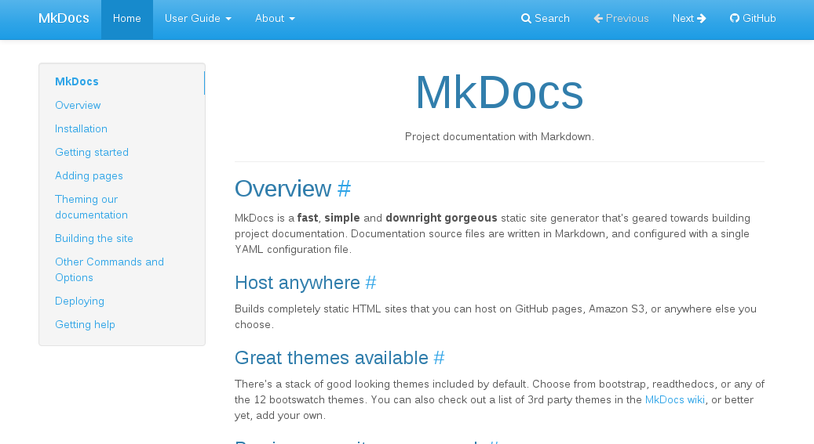
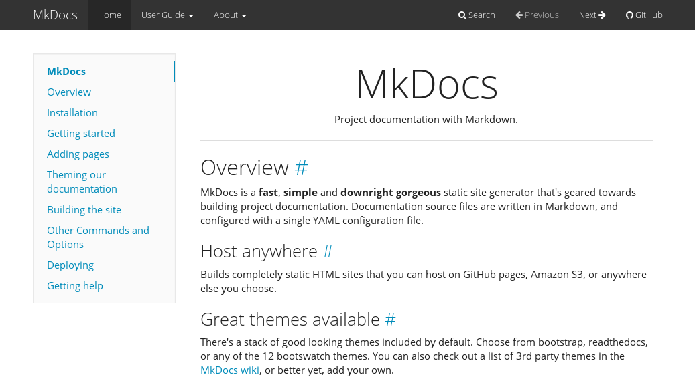

主题配置
更改主题
更改主题的语法格式为 theme: [主题名] 。
如果把主题更换为 readthedocs ，可以在 mkdocs.yml 文件中添加：
theme: readthedocs
内置主题
MkDocs 自己内置了两个主题，分别是 mkdocs 和 reathedocs 。此外，我们也可以使用一些第三方主题。
mkdocs
mkdocs 是创建项目后，项目默认使用的主题，使用修改过的Bootstrap构建而成，支持MkDocs的大部分功能。官方只支持两级导航。

readthedocs
该主题来源于Read the Docs服务使用的默认主题，也仅支持两个级别的导航。

第三方主题
MkDocs 项目托管在 github 上，在项目的 community wiki 中，提供了大量的第三方主题。
ReadTheDocs-Dropdown

安装 & 使用
pip install mkdocs-rtd-dropdown
在 mkdocs.yml 中配置：
theme: rtd-dropdown
这个主题在 mkdocs 中的名称为 rtd-dropdown 。
为什么要着重强调一下这个主题呢，因为这个主题非常好用，是内置主题 readthedocs 的升级版，相比于之前的版本，升级版的主题有以下几个优点：
-
支持菜单目录折叠。如图所示，点击
+可以展开，展开后会显示下一级的所有标题，如果还有下一级标题中还有子标题，则会嵌套显示+。 -
rtd-dropdown主题取消了子目录的缩进，防止目录级别过多而导致排版出现问题。 -
对应的
markdown文档只存在一个一级标题的情况下，将不予显示在导航目录中。
在之前版本的 read the docs 主题中， 子目录 所在 markdown 文档的一级标题会显示在 子目录 的 下一级目录 中，这就导致了子目录 和 下一级目录 重复的情况出现。而 rtd-dropdown 主题则解决了这一问题。
为了更好的说明这个情况，我们看一下前后的对比：
reathedocs
rtd-dropdown

注：本文中所指的导航栏、导航目录、菜单栏、菜单目录等均为同一事物。
Bootswatch
Bootswatch 项目提供了基于 Bootstrap 的各种 MkDocs 主题。
安装 & 使用
pip install mkdocs-bootswatch
Bootswatch 提供的主题列表如下：
比如在 mkdocs.yml 中配置 amelia 主题：
theme: amelia
或
theme: cosmo
Amelia

Cerulean

Cosmo
Cyborg
Flatly

Journal

Readable

Simplex
Slate

Spacelab

United

Yeti
